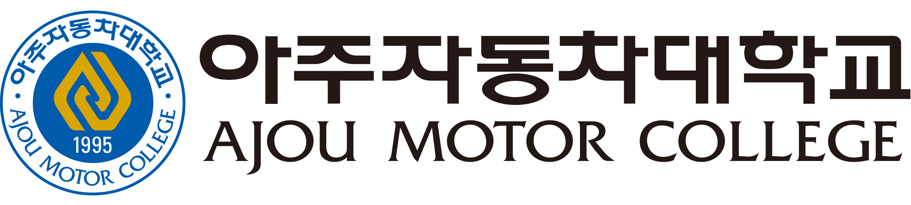

기출 데이터 기반 · 2022년 NCS 개편 이후 최신 경향 반영 · 2025~2026 시험 준비용
총 문항 수
60문항
CBT 랜덤 출제
합격 기준
60점
과락 없음, 100점 만점
시험 방식
문제은행
2016년 10월 CBT 전환
과목별 출제 구성 (60문항 기준 추정)
※ CBT 방식으로 수험자마다 문항 구성이 상이할 수 있음
출제 방식 변화 타임라인
~2016년
종이 시험(PBT) 방식. 기출문제 공개. 기출 위주 반복 학습만으로도 합격 가능.
2016년 10월
CBT(Computer-Based Testing) 전환. 문제 비공개 전환. 문제은행 방식 채택.
2021년까지
기출 재출제율이 높아 기출 반복 학습만으로 합격 사례 다수. 기존 기출(10년치) 풀이 전략 유효.
2022년 ★ 전환점
NCS(국가직무능력표준) 기반 출제로 전면 개편. 기출 재출제율 급감. 단순 암기형 → 이론 이해형 문제 증가. 2022년 이전 기출의 활용도 대폭 감소.
2022년 이후 ~ 현재
NCS 학습 모듈 기반 이론 + 최신 1~2개년 기출 복원 문제 병행 학습이 핵심 전략. 전기차·하이브리드 관련 문제 비중 점진적 증가.
과목별 최근 핵심 출제 테마
🔧 엔진 파트
🚗 새시 파트
⚡ 전기·전자 파트
🦺 안전관리 파트
최신 시험 준비 전략